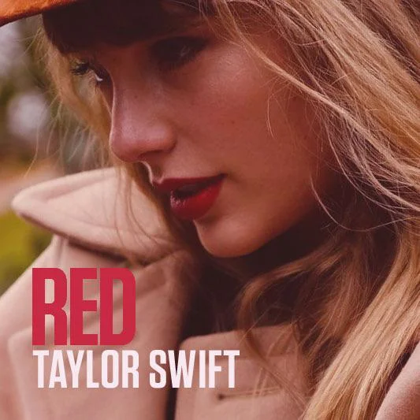
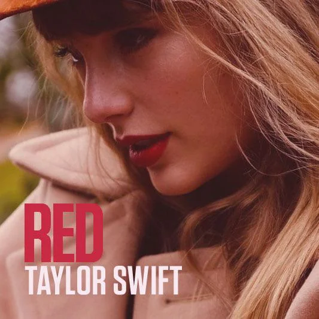

Taylor es de Independiente
¿Sabías que Taylor es fanática del club atlético Independiente de Avellaneda? Así es, la número uno siente una pasión incontrolable por el Rey de copas, esto lo demuestra en varias oportunidades. Como cuando fue a comer un choripan a la costanera usando la remera del rojo, o por supuesto, su tributo en forma de álbum a independiente llamado “Red” con unas de sus canciónes insignia de ese album de mismo nombre.
Aporta tu donación acá
Podés aportar
Doná acá!